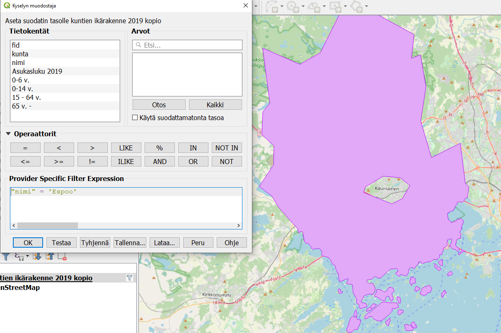
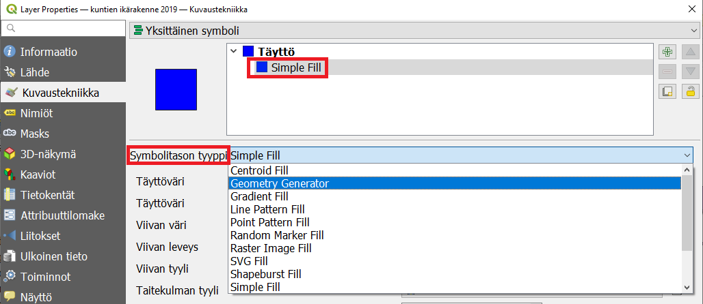
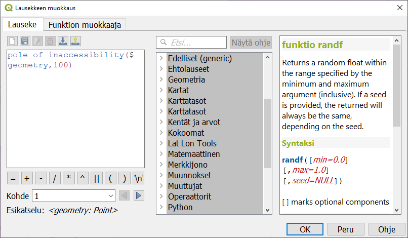
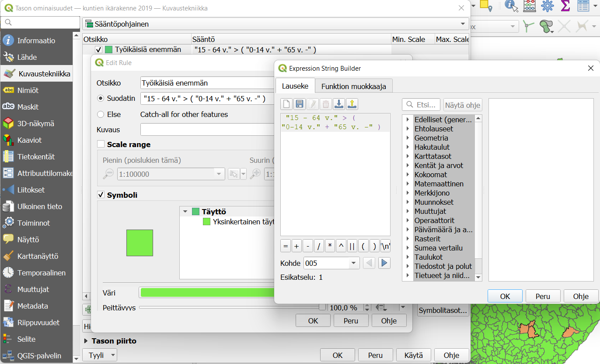

Harjoitus 1: Geometry generator, tyylitiedostot ja sääntöpohjainen visualisointi
Harjoituksen sisältö
Harjoituksessa tutustutaan Geometry generator -työkaluun, laaditaan vertaileva teemakartta sekä tallennetaan ja otetaan käyttöön tyylitiedosto.
Harjoituksen tavoite
Koulutettava oppii laatimaan teemakarttoja attribuuttitietoihin perustuen sekä ymmärretään tehtyjen visualisointivalintojen merkityksen valmiissa kartassa. Lisäksi koulutettava oppii hyödyntämään tyylitiedostoja ja johtamaan aineiston geometrioista uusia geometrioita.
Arvioitu kesto
45 minuuttia.
Valmistautuminen
Avaa uusi QGIS-projekti (Projekti > Uusi) ja tallenna se nimellä “QGIS-harjoitus 1”. Lisää projektiin seuraavat aineistot:
..kurssihakemisto/kuntien ikärakenne 2019.gpkg (taso: “kuntien ikärakenne 2019”)
OpenStreetMap (XYZ Tiles -valikosta) taustakartaksi
Polygonin käyttö maskina
Polygoneja voidaan käyttää tietyn alueen rajaavan maskin luomiseen. Suodata kuntien ikärakenne 2019 -tasoa siten että näkyviin jää vain kotikuntasi:

Muuta nyt polygonitason kuvaustekniikka Inverted polygons -tyyliseksi ja vaihda sen väri mustaksi ja peittävyys 50%:iin. Maskina toimiva taso häivyttää kaiken sen alle jäävän ja korostaa kotikuntaasi kirkkaampana. Huomaa, että jos alla olevissa tasoissa on käytössä nimiöitä, ne eivät jää maskitason alle vaan pomppaavat aina ylimmäiseksi! Maskitaso toimiikin parhaiten, kun sen avulla halutaan korostaa jotain rasteritason aluetta, kuten kaavan aluetta tai vaikkapa suojelualuetta.

Poista lopuksi tason suodatus ja vaihda kuvaustekniikka takaisin normaaliksi. Tai monista kuntien ikärakenne 2019 -taso ja työskentele jatkossa uudella kopiolla.
Geometry generator
Tällä työkalulla voidaan muuntaa vektorimuotoisia aineistoja geometriatyypistä toiseen visualisointitarkoituksessa. Aineiston todellinen geometria ei siis muutu. Avaa kuntien ikärakenne 2019 -tason Kuvaustekniikka ja valitse Symbolitason tyyppi -pudotusvalikosta Geometry Generator.

Vaihda geometriatyypiksi point/multipoint ja anna lauseke, jonka perusteella pisteiden sijainnit muodostetaan. Yksinkertaisin lauseke etsii kunta-polygonien painopisteen:
centroid($geometry)
Paina Käytä. Huomaa, että voit monistaa Simple fill -tason  -painikkeella ja luoda keskipisteiden alle toisen tason, jossa näkyvät alkuperäiset polygonit.
-painikkeella ja luoda keskipisteiden alle toisen tason, jossa näkyvät alkuperäiset polygonit.

Kuvassa näkyvän Hämeenlinnan painopiste on melkein sen ulkopuolella. Joskus onkin parempi käyttää esimerkiksi komentoa pole of inaccessibility, joka etsii reunaviivoista mahdollisimman kaukana olevan pisteen. Se tarvitsee lisäksi parametriksi toleranssin eli tarkkuuden jolla pisteen sijainti lasketaan:
pole_of_inaccessibility($geometry,100)
Lisää hyödyllisiä geometrianmuodostuslausekkeita voit etsiä tuttuun tapaan Lausekkeen muokkaus -ikkunassa joka löytyy -painikkeen takaa:

Tyylin tallentaminen tiedostoon
Alueiden keskipiste-visualisointia (pole of inaccessibility) voidaan hyödyntää muillekin aineistoille. Tallennetaan siis tämä geometry generatorilla luotu tyyli. Klikkaa kuvaustekniikka-ikkunan alalaidasta Tyyli-painiketta ja valitse Tallenna tyyli.... Tallenna tyyli QML-muodossa, anna sille kuvaava nimi (vaikkapa “keskipisteet” ja valitse tiedostolle sijainti.

Tätä qml-tiedostoa voi nyt käyttää mille tahansa polygonimaiselle vektoriaineistolle, kun haluat esittää niiden keskipisteet sekä alkuperäiset alueet yhdessä. Huomaa, että qml-tiedosto toimii vain QGISissä.
Avaa jokin toinen polygoniaineisto ja käytä sille tallentamaasi tyyliä. Voit ottaa tyylin käyttöön samasta Tyyli-painikkeesta valitsemalla Lataa tyyli.
Sääntöpohjainen visualisointi
Sääntöpohjaisella visualisoinnilla voidaan luoda useampaan attribuuttitietoon perustuvia, monimutkaisempia tyylejä. Tehdään sen avulla teemakartta, joka esittää kuntien huoltosuhteen eli työikäisen väestön suhteen lapsiin ja vanhuksiin.
Valitse kuntien ikärakenne 2019-tason kuvaustekniikaksi Sääntöpohjainen ja muodosta ensimmäisen säännön lauseke tulpaklikkaamalla säännön riviä. Anna säännölle nimi ja syötä lauseke  -painikkeesta. Valitse sitten tyyli ja väri, jolla haluat nämä kunnat visualisoida.
-painikkeesta. Valitse sitten tyyli ja väri, jolla haluat nämä kunnat visualisoida.

Luo myös toinen sääntö  -painikkeella ja anna sille suodatinlauseke, jossa työikäisiä on vähemmän kuin muita ikäryhmiä. Valitse sillekin kuvaava väri.
-painikkeella ja anna sille suodatinlauseke, jossa työikäisiä on vähemmän kuin muita ikäryhmiä. Valitse sillekin kuvaava väri.
Entä jos jossain kunnassa huoltosuhde on täsmälleen 1:1? Silloin tuo kunta jää näillä sääntöasetuksilla näkymättömäksi. Sisällytä se siis jompaankumpaan sääntöön käyttämällä “pienempi tai yhtäsuuri kuin” -ehtoa.
Kun olet valmis, tallenna projektitiedosto kurssihakemistoon pikanäppäimellä CTRL + T tai päävalikosta Projekti > Tallenna.
Psst! Koulutuksen jälkeen saat henkilökohtaista tukea Gispon tukipalvelusta. Lähetä kysymyksesi tai kommenttisi osoitteeseen tuki@gispo.fi!